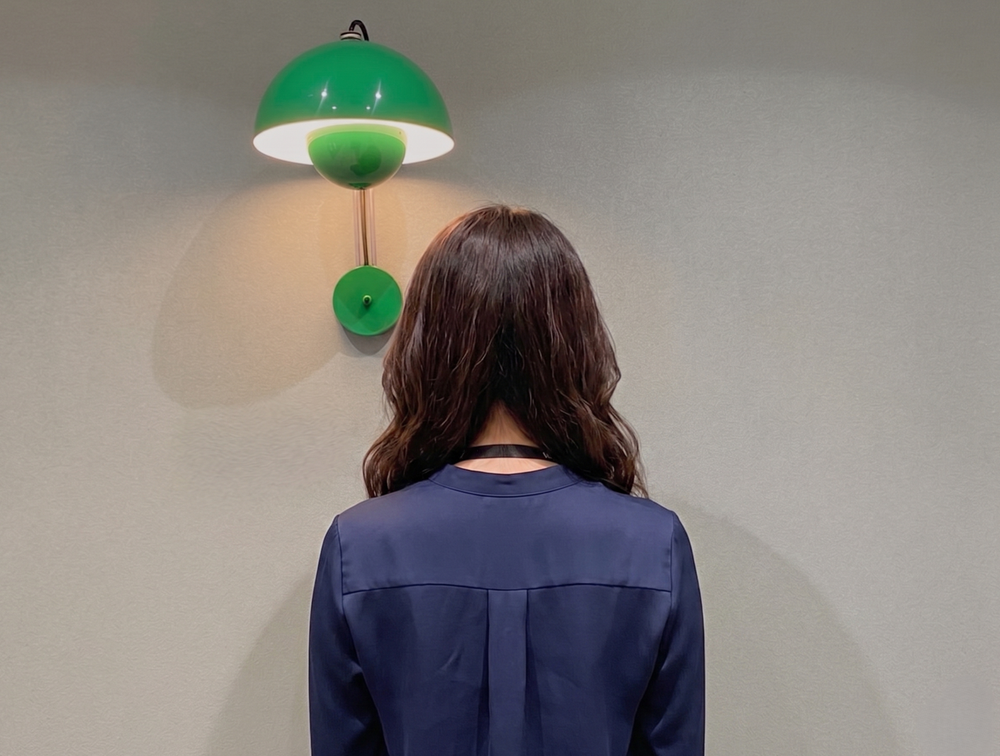
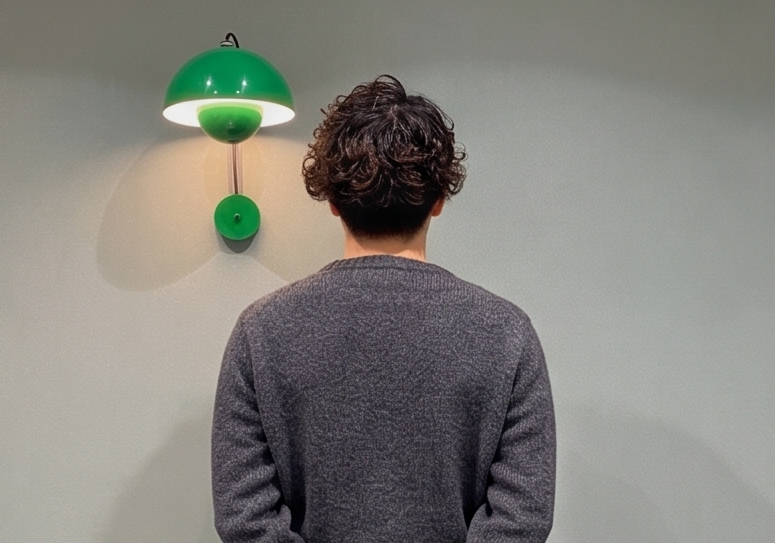
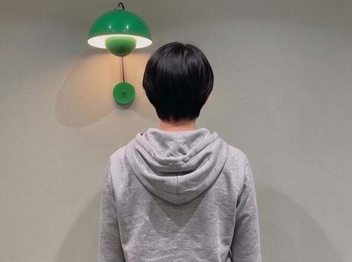
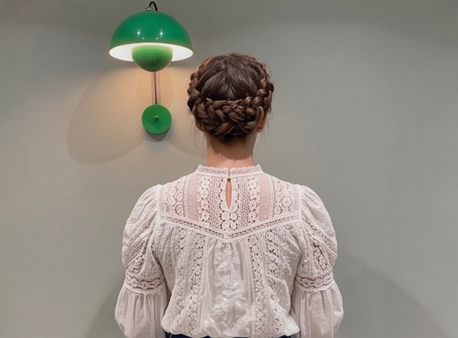
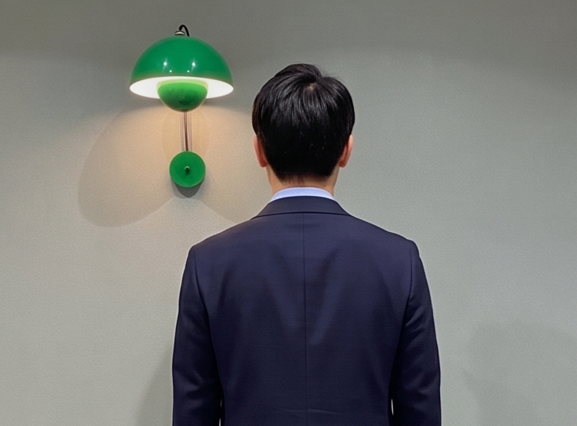

【卒業生：大橋さん（24歳）前職：風力発電機の部品検査 ➔ 転職：機械エンジニア】 現場で図面を見ながら部品を検査するなかで、「自分も設計側（上流工程）に挑戦したい」と思い、未経験からキャドガクで学習を決意。働きながらでもスキマ時間で、いつでもオンライン上で講師と学べたので、入校から40日間で機械エンジニアとして正社員転職ができました！

【卒業生：大橋さん（24歳）前職：風力発電機の部品検査 ➔ 転職：機械エンジニア】 現場で図面を見ながら部品を検査するなかで、「自分も設計側（上流工程）に挑戦したい」と思い、未経験からキャドガクで学習を決意。働きながらでもスキマ時間で、いつでもオンライン上で講師と学べたので、入校から40日間で機械エンジニアとして正社員転職ができました！

【卒業生：佐々木さん（29歳）前職：アパレル店長 ➔ 転職：建築CADオペレーター】 販売職を5年間経験し、20代最後に「将来のために、手に職をつけたい」と一念発起。完全未経験からでしたが、キャドガクの平日10時〜22時までいつでも講師に質問できる環境が大きな支えになりました。年齢や職歴の不安も、専任のアドバイザーが企業目線の選考対策でカバーしてくれたおかげで、無事に建築CADオペレーターとして、新しいキャリアへの一歩を踏み出せました！

【卒業生：黒光さん（26歳）前職：大手住宅設備メーカー（鋳造・成形） ➔ 転職：機械エンジニア】 高校卒業後、約7年間製造に携わってきましたが、「より上流工程の設計職を目指し、市場価値を高めたい」と考えキャドガクを受講。現場経験という強みと、業界シェアの高い「AutoCAD」の基礎を徹底的に学習したことで、採用企業から高い評価を獲得。プロ2名体制のサポートが自信に繋がり、未経験から憧れの機械エンジニアへ転職ができました！

【卒業生：蒲田さん（27歳）前職：冠婚葬祭会社で事務職 ➔ 転職：建築CADオペレーター】 火葬場運営会社の事務職を続ける中で「一生モノの手に職をつけ、就職まで一気通貫でサポートしてくれるスクール」を探していました。何となく選んだCADでしたが、学習を進めるうちに面白さにのめり込み、機械と建築の両方で内定を獲得！一番家から近く条件の良い会社の建築CADオペレーターに転職を決定しました。

【卒業生：寺田さん（30歳）前職：接客業（派遣社員） ➔ 転職：建築施工管理】 大学卒業後は派遣を転々とし、正社員経験がないことに強い焦りを感じていました。需要がある専門性の高い仕事に就くためCADの学習を決意。図面を見る楽しさやモノづくりの奥深さに触れて興味関心が増し、前職の接客業で培ったコミュニケーション力を武器に、未経験から施工管理職への正社員就職を勝ち取りました！

【卒業生：三島さん（23歳）前職：半導体製造メーカーの製品検査業務（派遣社員） ➔ 転職：機械エンジニア】 専門学校を卒業後、派遣で半導体製造の製品検査をしていました。学生時代に少し触れたAutoCADの楽しさを思い出し、「もっと手に職をつけて、より上流工程の設計職として働きたい」とキャドガクで再学習。20代前半での未経験転職でしたが、手厚いサポートで見事に機械エンジニアへのキャリアアップを果たしました。

【卒業生：吉田さん（26歳）前職：アパレルパタンナー（服飾専門卒） ➔ 転職：インテリアデザイナー】 服飾専門学校を卒業しパタンナーとしてアパレル用CADを使用していましたが、業界の競争激化や縮小を感じて他業界への転身を決意。まずは幅広く業界を見たいと思い、汎用性が高いキャドガクでCADを学習しました。CADの経験があることが企業に評価され、未経験では難関のインテリアデザイナーへ転職を成功させました！

【卒業生：杉内さん（29歳）前職：法律事務所の事務職 ➔ 転職：機械エンジニア】 法律事務所の事務職として勤務していましたが、激務のわりに将来的なスキルが残らない現状に不満を抱いていました。趣味の3Dプリンターでのモノづくりをきっかけに機械エンジニアを目指してキャドガクに入校。有給消化の期間をフル活用して集中学習した結果、なんと入校からわずか32日間で機械エンジニアとしての転職を成功させました！
【卒業生：中川さん（26歳）前職：ITエンジニア ➔ 転職：大手住宅メーカーの住宅設計職】 大学卒業後、ITエンジニアをしていましたが、仕事がAIに代替されていくのを実感し将来性に不安を覚えていました。「AIに奪われない、現実世界のモノづくりの技術」を求めてCADに出会い入校。ITで培った論理的思考とモノづくりマインドが高く評価され、大手住宅メーカーから住宅設計職の内定をいただきました！